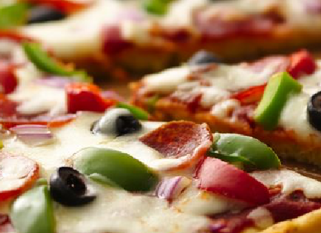
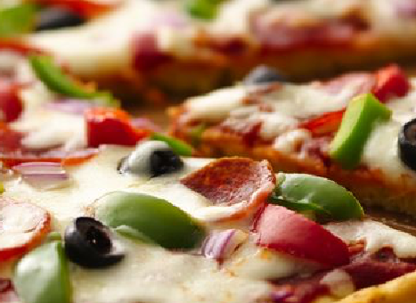

Masa
20 gr de levadura seca instantánea
1 cucharadita de azúcar
500 ml agua tibia
100 ml aceite vegetal
4 cucharadas de aceite de oliva
65 gr harina de maíz fina (chuchoca)
2 cucharaditas de sal
625 gr harina
Salsa
5 cucharadas de aceite de oliva
½ cebolla picada en cubos finos
2 cucharaditas de sal
3 cucharadas de Orégano Gourmet
1 ½ cucharadas de Albahaca Gourmet
2 tarro de tomates en cubos al natural
2 cucharaditas de azúcar
Relleno
½ cebolla, en cubos
500 gr hojas de espinacas picadas
400 gr de champiñones, laminados
300 gr de queso mozarella.
4 cucharadas queso parmesano
1. Para la masa, disolver la levadura y el azúcar en agua tibia en un bol grande. Dejar reposar 2 minutos. Agregar el aceite, la harina de maíz, sal y 400gr de harina. Mezclar bien. Amasar y agregar el resto de harina, la cantidad necesaria para tener una masa blanda. Poner en el mesón y amasar por 5 minutos o hasta tener una masa lisa y elástica (agregar harina en el mesón a medida que se va amasando para que la masa no se pegue) . Poner la masa en un bol aceitado, tapar con un paño de cocina limpio y dejar reposar hasta que la masa duplique su volumen (leudar). Golpear la masa para que baje y luego dejar leudar por 40 minutos adicionales.
2. Mientras tanto preparar la salsa: Calentar 4 cucharadas de aceite en una olla a fuego medio. Agregar la cebolla, Orégano Gourmet, Albahaca Gourmet, sal y cocinar hasta que la cebolla esté dorada. Agregar el ajo y cocinar por 30 segundos. Agregar los tomates junto al jugo del tarro, a la mezcla de cebolla. Agregar el azúcar y cocinar hasta que la mezcla se haya reducido y espesado, como 30 minutos. Sazonar con sal y pimienta a gusto. Reservar.
3. Relleno: Cocinar las chalotas en el aceite de oliva hasta que estén transparentes. Agregar los champiñones y las espinacas, cocinar hasta que estén cocidos y se haya evaporado todo el líquido que hayan votado los vegetales. Reservar.
4. Calentar el horno a 220C.
5. Una vez que la masa haya reposado, dividirla en dos bolas. Estirar cada masa para cubrir dos moldes (desmontables) de 26 cm, hacer un borde de 5 cm con la masa. Dividir el relleno entre las dos pizza, tapar con el queso mozarella, luego terminar con la salsa de tomates y finalmente espolvorear el queso rallado.
6. Hornear por 35 a 40 minutos o hasta que el relleno esté caliente y la base esté esponjosa y dorada. Esperar unos minutos antes de desmoldar.

This is a wider card with supporting text below as a natural lead-in to additional content. This content is a little bit longer.

This card has supporting text below as a natural lead-in to additional content.

This is a wider card with supporting text below as a natural lead-in to additional content. This card has even longer content than the first to show that equal height action.